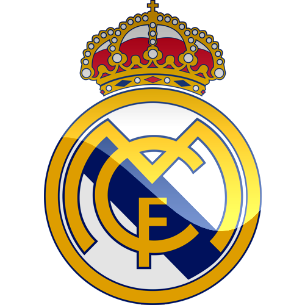
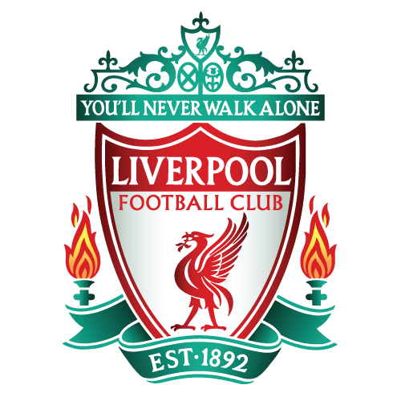
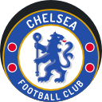

Estatísticas de Clubes e Jogadores
| Maiores artilheiros |
|---|
 Cristiano Ronaldo: 134 gols Cristiano Ronaldo: 134 gols
|
 Lionel Messi: 120 gols Lionel Messi: 120 gols |
 Robert Lewandowski: 73 gols Robert Lewandowski: 73 gols |
| Raúl González: 71 gols |
| Karim Benzema: 71 gols |
 Ruud van Nistelrooy: 56 gols Ruud van Nistelrooy: 56 gols |
| Thierry Henry: 50 gols |
 Zlatan Ibrahimović: 48 gols Zlatan Ibrahimović: 48 gols |
| Thomas Müller: 48 gols |
| Andriy Shevchenko: 48 gols |
| Maiores campeões |
|---|
| Real Madrid: 13 títulos |
| Milan: 7 títulos |
| Liverpool: 6 títulos |
| Bayern de Munqiue: 6 títulos |
| Barcelona: 5 títulos |
 Ajax: 4 títulos Ajax: 4 títulos |
| Manchester United: 3 títulos |
 Internazionale: 3 títulos Internazionale: 3 títulos |
| Chelsea: 2 títulos |
 Benfica: 2 títulos Benfica: 2 títulos |
| Jogadores com mais jogos |
|---|
| Casillas: 181 jogos |
| Cristiano Ronaldo: 180 jogos |
| Xavi: 157 jogos |
| Messi: 149 jogos |
| Raúl: 142 jogos |
| Giggs: 141 jogos |
| Iniesta: 130 jogos |
| Sergio Ramos: 128 jogos |
| Seedorf: 125 jogos |
| Buffon: 124 jogos |
| Clubes com mais jogos |
|---|
| Real Madrid: 451 jogos |
| Bayern de Munique: 362 jogos |
| Barcelona: 327 jogos |
| Juventus: 287 jogos |
| Manchester United: 285 jogos |
| Benfica: 258 jogos |
 Porto: 255 jogos Porto: 255 jogos |
| Milan: 249 jogos |
 Dínamo Kiev: 243 jogos Dínamo Kiev: 243 jogos |
| Ajax: 233 jogos |